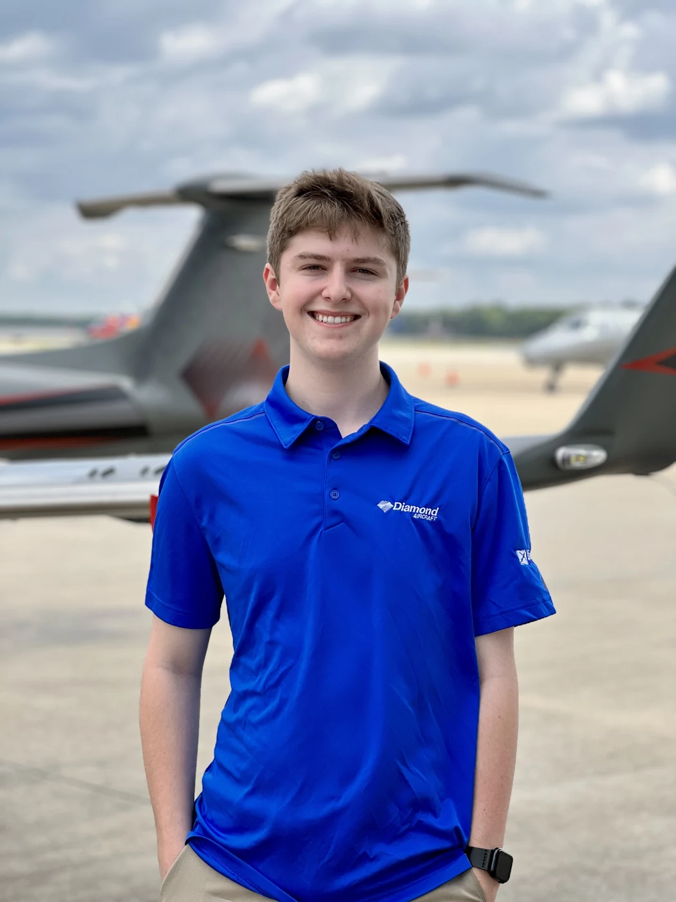

Internship experience
I joined LifeStyle Aviation through Apex Friendship High School’s Academy of Engineering and Advanced Manufacturing. I kept a journal throughout the internship to document what I worked on and learned. My workspace was at the marketing director’s desk, shown below.


Project of interest
I researched asking prices for selected aircraft models across listing websites, updated spreadsheets, and tracked pricing trends for the sales team. I carried out the work manually during the internship. After moving into a full-time role following the internship, I automated listing collection and exports. The Aircraft Market Analyses case study covers that workflow and the time it saved.
Internship journal
Read the original Google Doc or download the internship journal (PDF).